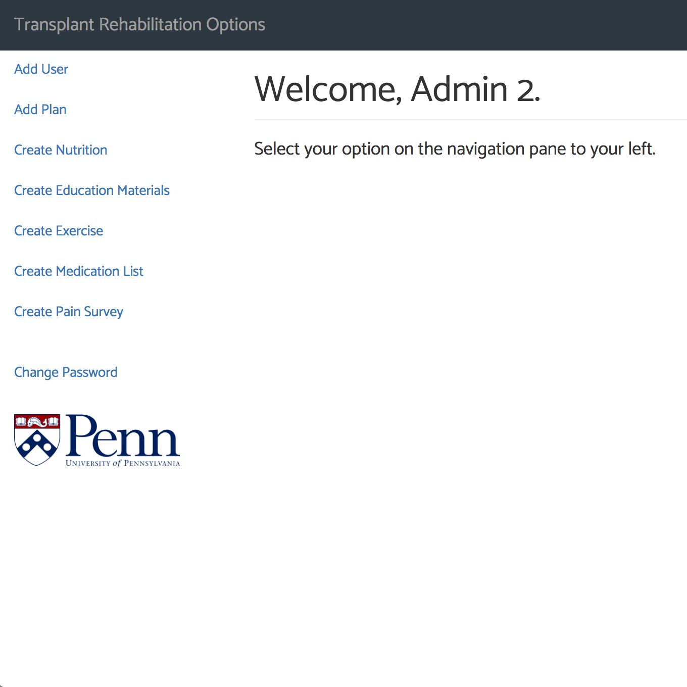
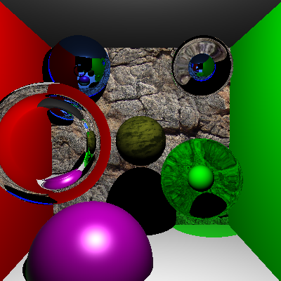

Walt Disney Animation Studios Software Engineering Intern
Summer 2018
Worked in the Production Technology department at Walt Disney Animation Studios as a summer intern. Explored different rendering methodologies for Meander, the most popular drawing engine for applications across the Disney Studios. Explored tile-based rendering and the support for Apple's Metal renderer.
3D Visualization Research Project
Summer 2017
Collaborated with Matterport Scans to acquire 3D scanned models of the Penn Museum’s Native American exhibit and the SIG center for Graphics. Used HTML, Javascript and CSS to connect them, add labels, and hide specific sections for security or aesthetic reasons.
Worked under Dr. Norman Badler under the Penn Arts Council Grant.

UPenn Transplant Rehabilitation App
Spring 2017
Developed a web application to rehabilitate patients after liver, lung, or kidney transplants, which will soon be used by real medical practitioners at the Hospital of the University of Pennsylvania.
Worked with two team members over the course of eight weeks using Javascript, HTML, and CSS.

Monte Carlo Path Tracer
Spring 2017
Created a Monte Carlo Path Tracer renderer using C++ and OpenGL. Worked alone over the span of 7 weeks, with a deliverable due each week.
Recursive Raytracer
Spring 2017
Implemented a raytracer renderer that calculates refraction, reflection, and texture mapping. Developed over two weeks with a deliverable due each week.
Mini Minecraft
Fall 2016
Replicated the video game “Minecraft” over three weeks using C++ and OpenGL with two team members.
Mini Maya
Fall 2016
Replicated the application Autodesk Maya using C++. It contains a functional UI that includes extruding, smoothing, adding edges, adding vertices, and loading an OBJ or JSON file. Developed over 4 weeks with a deliverable due each week.